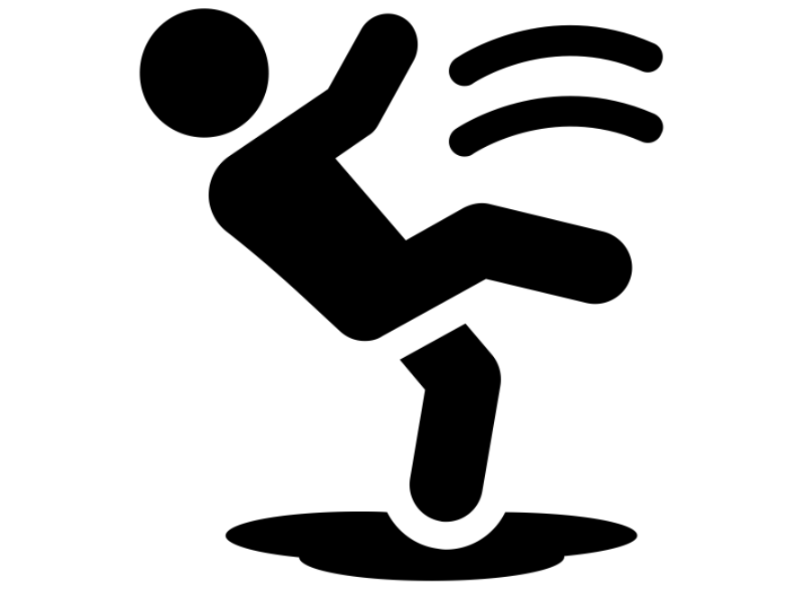
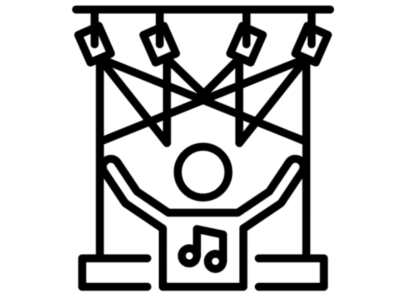
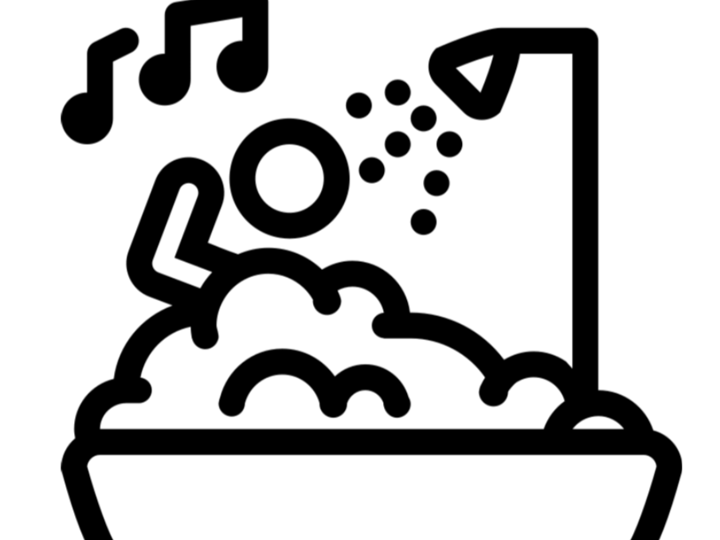

Transform Your Shower into a Concert
The shower is not a boring scrub-down but a full-on concert. I mean, who doesn't want to really feel like they can belt out their favorite songs and imagine they are on stage at Coachella? The right products will take your shower from drab to fab in seconds. Think of non-slip mats so that your coolest dance moves don't get turned into some slippery disaster, waterproof speakers to blast your favorite tunes, and LED showerheads that'll make one feel like they're in some rave. Who needs nightclubs when you have a shower? Here are some must-have products in which the shower rave gets an upgrade:
Shower Safety Mat

First, there is the shower safety mat. You want something to keep your footing secure while grooving to your favorite tunes, right? Nobody wants to do the splits because their shower mat decided it was time to go surfing in the shower. A non-slip shower mat is your trusty sidekick here, keeping you upright while channeling your inner Beyoncé.
Check it out on Amazon!
Waterproof Bluetooth Speaker

Next on the list is a waterproof Bluetooth speaker. The real MVP of your shower rave, bringing the tunes and-oh man-you'll want to blast them! Be it belting the latest pop hits or just relaxing beats as the water hits you, this speaker will make sure your sound experience is topnotch. Plus, it's waterproof, so you won't need to concern yourself with any splash-related issues. Dance like nobody's watching-because they shouldn't be!
Get yours on Amazon!
LED Shower Head

And last but not least, the LED shower head: this is basically what takes your shower from "meh" to "OMG, I'm at a concert! ". Your shower experience went from bland to grand in the form of an engaging light display that syncs with your music. Just think about colored lights dancing around you while you clean away the day; it's like a private concert at your own place! You won't ever want to leave the shower again-but, please do, we wouldn't want you to turn into a raisin.
Shop now on Amazon!